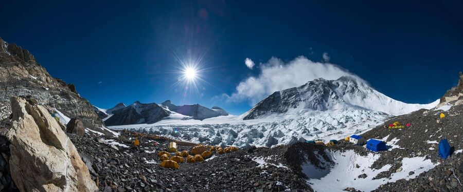
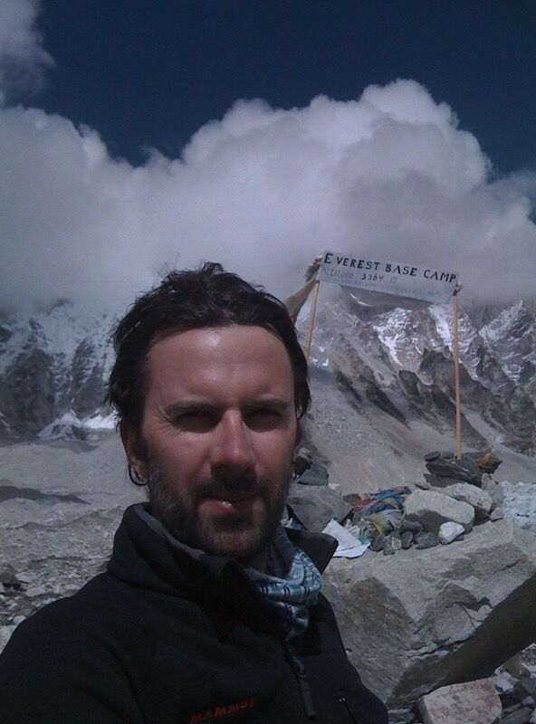
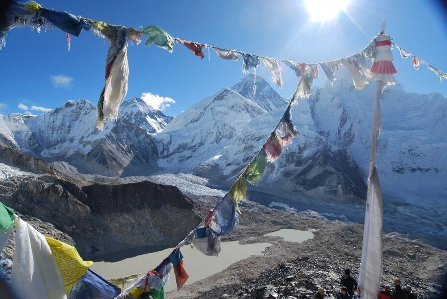
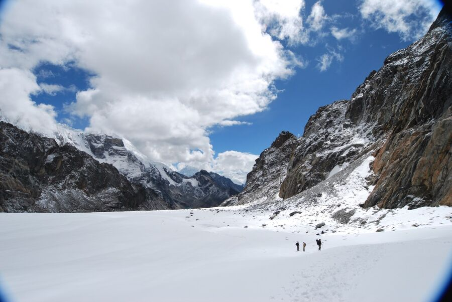
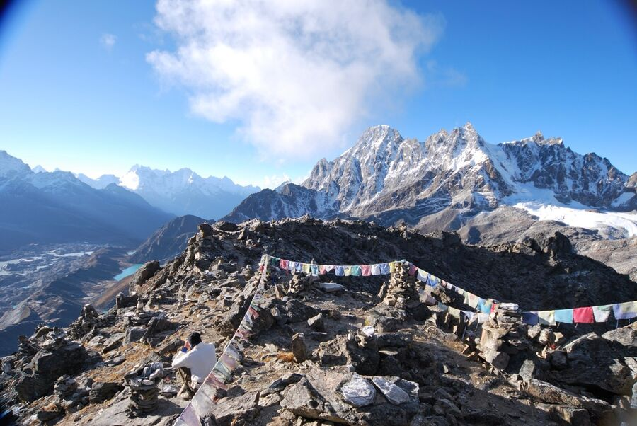

Die Strecke beinhaltet 4 Punkte über 5.000 Meter Höhe:
- Der Gokyo Ri bei 5.357 m
- Das Base Camp des Mount Everest (Nepalesisch: „Sagarmatha“) bei 5.364 m
- Der Cho La-Pass bei 5.420 m
- Der Kala Patthar bei 5.545 m
Nachfolgend dazu einige Informationen entsprechend dem Verlauf der Route:
Mount Everest Base Camp (5.364 m)

Das (südliche) Basislager des Mount Everest befindet sich auf dem Khumbu-Gletscher. Es ist nicht immer vorhanden, sondern nur dann, wenn es auch Expeditionen auf den Mount Everest gibt. Die Besteigungen beginnen meistens im April und Mai. Dann herrscht dort für 2-3 Monate reges Treiben. Als ich 2009 Ende September dort war, gab es außer einem Schild dort eigentlich nichts.

Es ist übrigens das südliche Basislager, es gibt noch ein nördliches Basislager, welches sich allerdings auf der anderen Seite des Mount Everest auf tibetischen Staatsgebiet befindet.
Kala Patthar (5.545 m)

In unmittelbarer Nachbarschaft zum Mount Everest (8.848 m) befinden sich der Lhotse (8.516 m), Nuptse (7.861 m), der Pumori (7.161 m) und der Ligtren (6.714 m). Der Kala Patthar ist eigentlich ein Vorgipfel des Pumori. Von dort hat man einen tollen Ausblick auf die umliegenden Gipfel und vor allem den Mount Everest.
Cho La Pass (5.420 m)
Cho La Pass
Vom Kala Patthar (am Khumbu-Gletscher) gelangt man zum westlich gelegenen Gokyo Ri (am Ngozumpa-Gletscher) am schnellsten, in dem man den von Ost nach West den Cho La Pass übersteigt.
2009 stiegen wir vom Westen her über den Pass, da wir am Tag zuvor den Gokyo Ri bestiegen hatten. Die Überschreitung des Passes war für mich der schwierigste Teil der gesamten Tour, da ich schlecht geschlafen hatte und bei Aufbruch in den frühen Morgenstunden nicht ausreichend Flüssigkeit und Kohlenhydrate zu mir nahm. Oben auf dem Pass befindet sich ein gewaltiges Schneefeld.

Gokyo Ri (5.357 m)

Der Gokyo Ri ist der zweite Gipfel der Tour. Es befindet sich direkt neben dem Ngozumpa-Gletscher, dem größten Eisstrom Nepals. Es gibt hier auch die 6 alpinen Gokyo Seen. Vom Gipfel des Gorki Ri kann man den Mount Everest (8.488 m), Lhotse (8.516 m), Makalu (8.485 m), Kangchenjunga (8.586 m) und Cho Oyu (8.188 m) sehen.